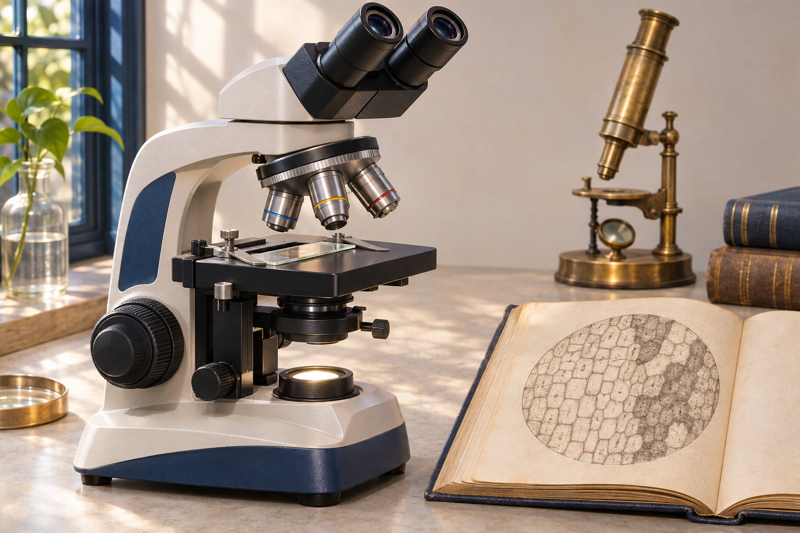
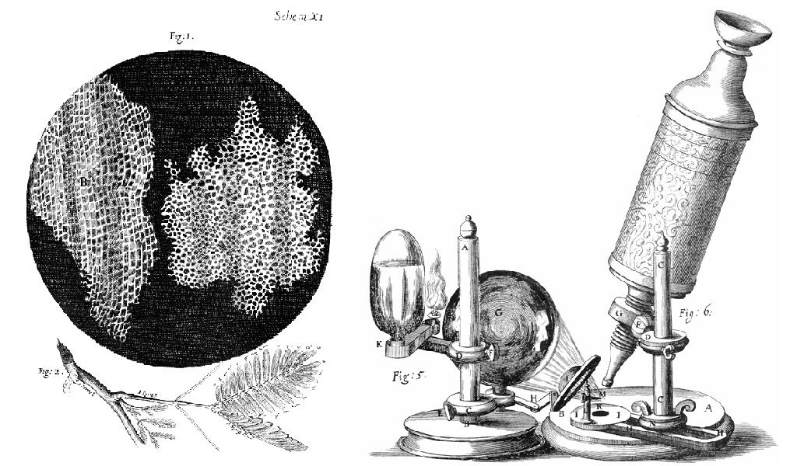
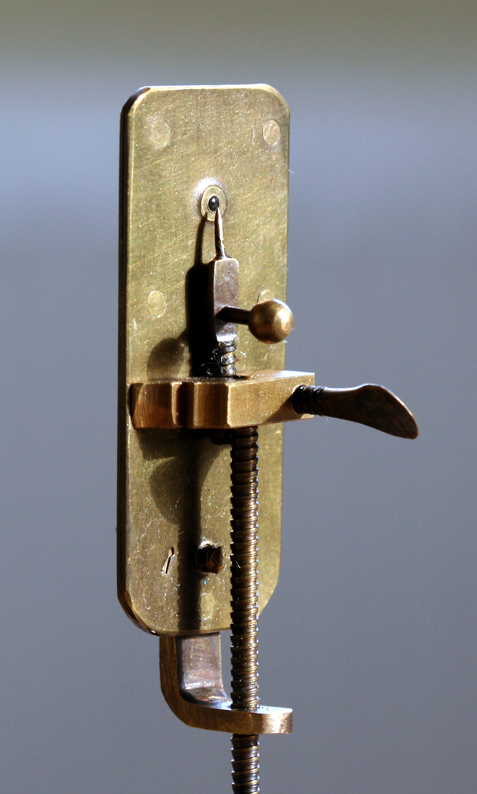
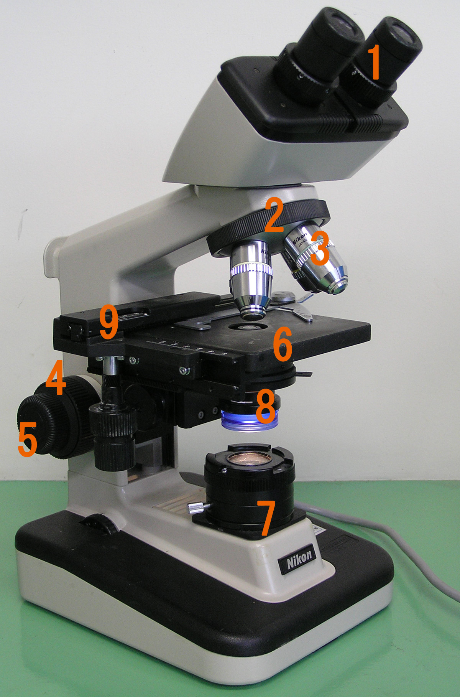
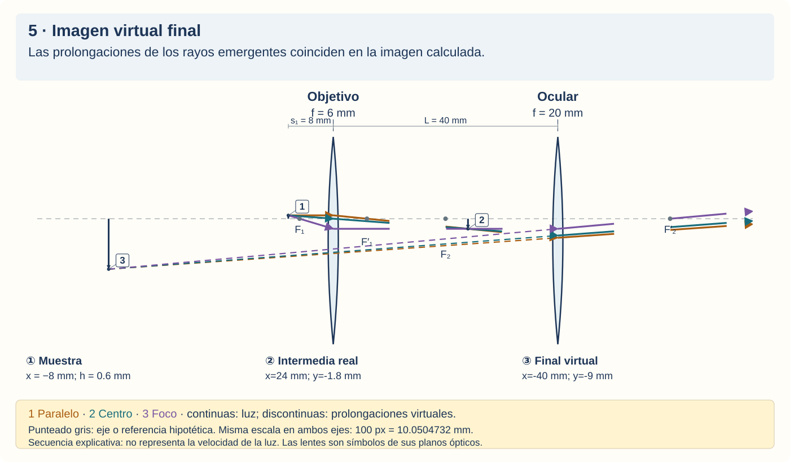
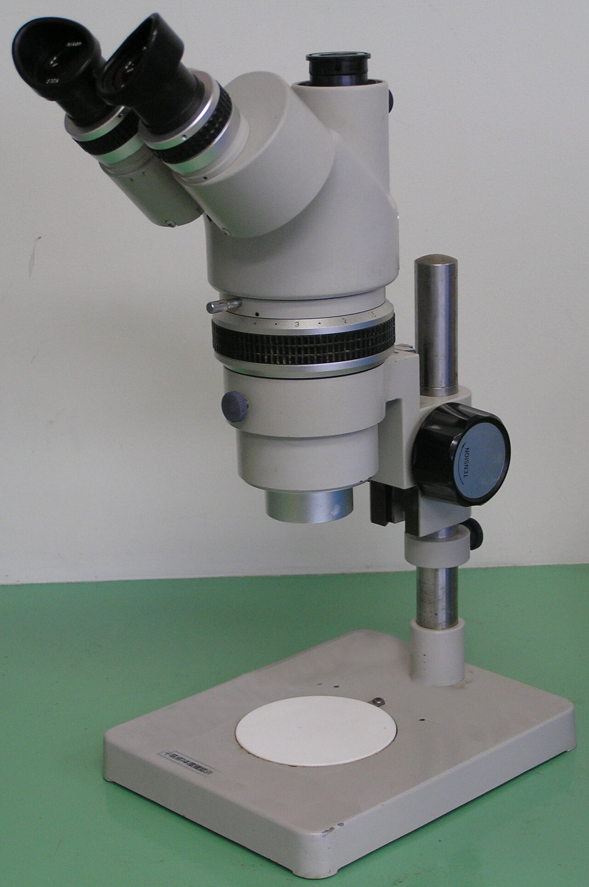
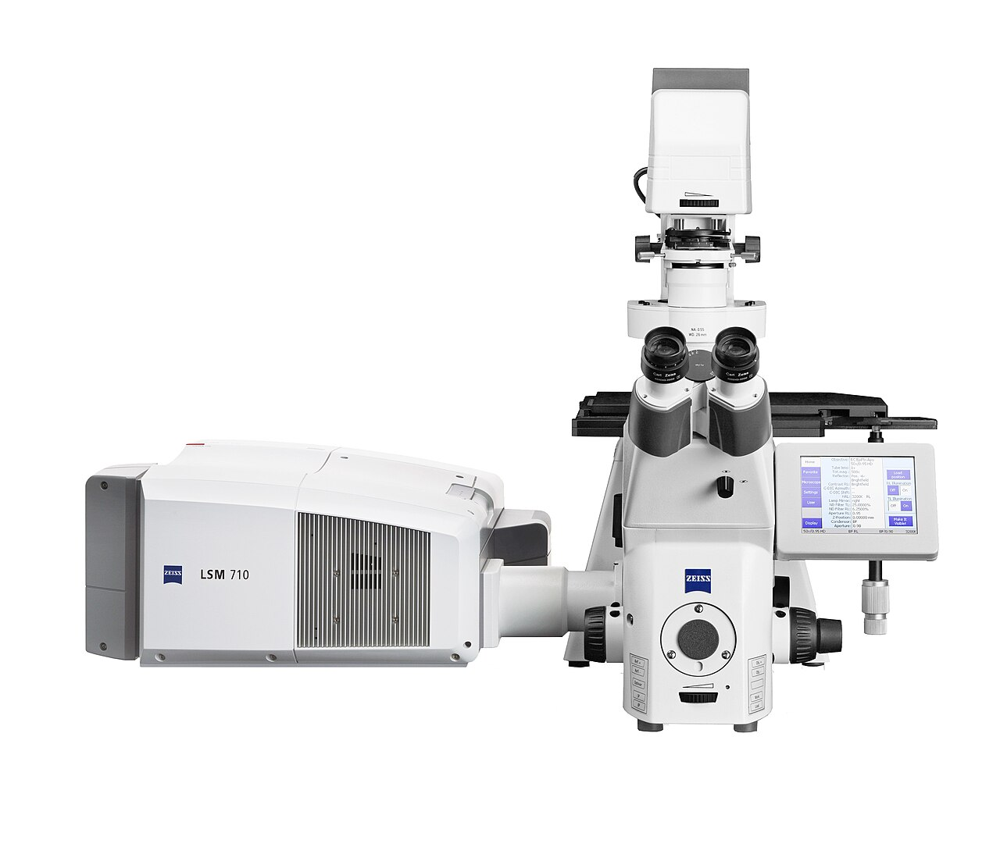
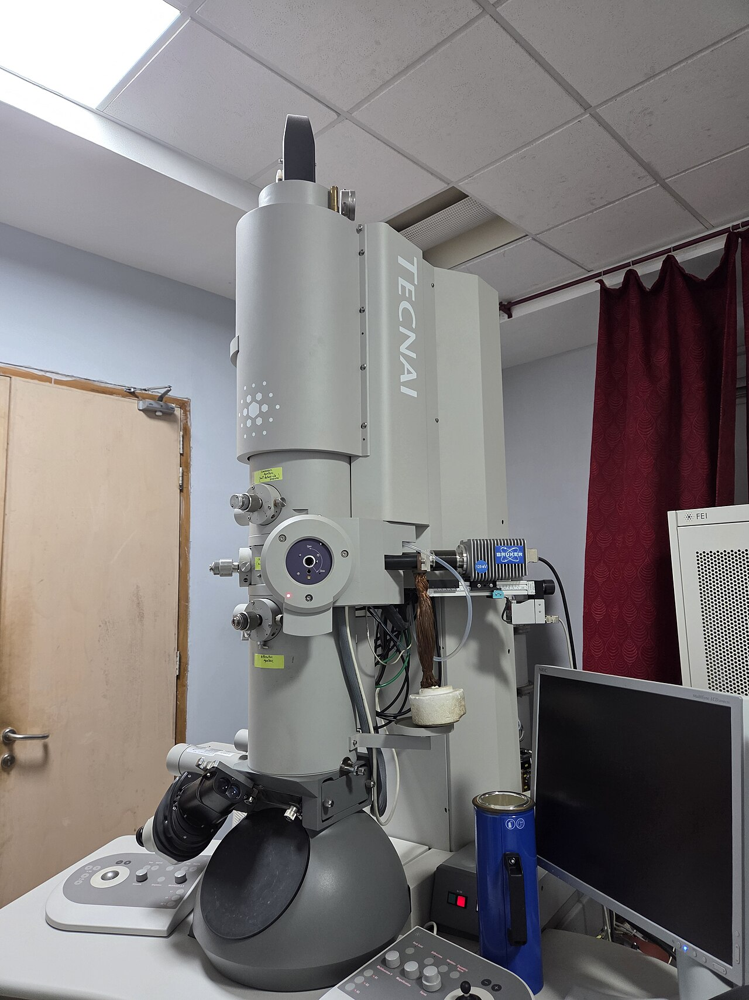
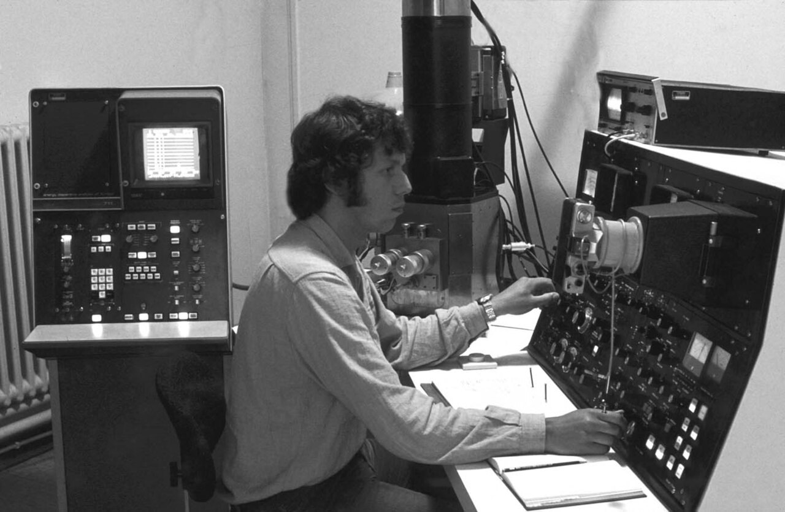

Sistemas Multi Física · Clase 20 · Óptica
Microscopios: descubrir lo pequeño
De las celdillas de Hooke a los laboratorios actuales. Lentes, rayos y experimentos que cambiaron nuestra manera de conocer.
1 ¿Por qué necesitamos un microscopio?
Una hoja parece una superficie continua cuando la miramos a simple vista. Un microscopio puede revelar que está formada por células. El objeto no cambió: cambió nuestra posibilidad de distinguir sus detalles.
Un microscopio es un instrumento que permite estudiar objetos o estructuras demasiado pequeños para observarlos adecuadamente a simple vista. Algunos usan luz y lentes; otros, electrones y campos eléctricos o magnéticos. No todos producen imágenes del mismo modo.
En la clase anterior usamos el telescopio para mirar objetos lejanos. Ahora nos acercamos a una muestra pequeña. En ambos casos la física explica cómo se forma la imagen, pero la disposición y la función del instrumento cambian.
2 Robert Hooke y las celdillas del corcho
En 1665, Robert Hooke publicó Micrographia, un libro con descripciones y dibujos de objetos observados con un microscopio compuesto. Al estudiar una lámina de corcho, encontró pequeños compartimientos y los llamó células, por su parecido con pequeñas habitaciones.
El corcho es un tejido vegetal muerto: Hooke observaba principalmente sus paredes y cavidades, no todos los componentes internos de células vivas. Sus dibujos ayudaron a comunicar lo observado a personas que no estaban frente al instrumento.

Idea para recordar: observar y dibujar con cuidado permitió hacer visible una estructura que a simple vista pasaba inadvertida. Eso no significa que Hooke ya conociera toda la biología celular actual.
3 Leeuwenhoek: una sola lente, grandes hallazgos
En la década de 1670, Antonie van Leeuwenhoek perfeccionó pequeñas lentes y observó organismos diminutos, entre ellos microorganismos unicelulares. Compartió observaciones con la Royal Society desde 1673. No necesitó un tubo grande lleno de lentes: muchos de sus instrumentos eran microscopios simples.
Un microscopio simple usa una lente convergente, como una lupa. La muestra se coloca entre la lente y su foco. El ojo recibe rayos que parecen provenir de una imagen virtual, derecha y de mayor tamaño angular.

4 Pasteur: ver también exige experimentar
En el siglo XIX se discutía si los microorganismos podían aparecer espontáneamente en sustancias como los caldos. Louis Pasteur no inventó el microscopio. En la década de 1860 desarrolló experimentos que ayudaron a distinguir entre aparición espontánea y contaminación por microorganismos del ambiente.
Usó matraces de cuello de cisne: recipientes cuyo cuello largo y curvado permitía entrar aire, pero retenía polvo y microorganismos. Tras un tratamiento que esterilizaba el caldo, este permanecía sin crecimiento mientras se evitaba su contaminación.
| Condición | Qué ocurre | Qué permite pensar |
|---|---|---|
| Caldo esterilizado, cuello curvo intacto. | Entra aire; el polvo queda retenido y no aparece crecimiento mientras se mantiene esa protección. | La entrada de aire, por sí sola, no basta para producir el crecimiento. |
| El caldo entra en contacto con el polvo retenido, o se pierde la protección del cuello. | Puede aparecer crecimiento microbiano por contaminación. | Los microorganismos proceden de contaminación del ambiente en estas condiciones. |
El resultado se apoya en comparar condiciones y controlar la contaminación, no solo en mirar por un ocular. Estos ensayos no explican cómo surgió la primera vida en la Tierra: responden una pregunta experimental diferente.
5 Las lentes y las piezas del microscopio
En aire, una lente de vidrio convergente reúne un haz inicialmente paralelo al eje en un foco real; una divergente lo separa como si procediera de un foco virtual. Las convergentes pueden ser biconvexas o plano-convexas; las divergentes, bicóncavas o plano-cóncavas.
La distancia focal, \(f\), caracteriza la separación entre lente y foco en el modelo delgado. Usamos \(f>0\) para convergentes y \(f<0\) para divergentes. En el microscopio óptico compuesto, tanto el objetivo como el ocular tienen efecto convergente.
Objetivo
Está cerca de la muestra. Recoge la luz que proviene de ella y forma la primera imagen aumentada.
Ocular
Está cerca del ojo. Permite observar con mayor tamaño angular la imagen intermedia formada por el objetivo.
Condensador
Concentra y organiza la iluminación sobre la muestra. No cumple la función del objetivo ni forma la imagen final que observamos.
Enfoque y platina
La platina sostiene el preparado. Los mandos de enfoque ajustan la separación necesaria para obtener nitidez.
En un equipo real, el objetivo y el ocular suelen ser grupos de lentes. Un objetivo acromático combina elementos para reducir defectos relacionados con los colores; un apocromático ofrece una corrección más amplia. La palabra plan indica corrección para obtener un campo de imagen más plano. Pueden contener lentes de distintos tipos aunque el conjunto sea convergente.
6 Microscopio compuesto de campo claro
Es el tipo habitual en muchos laboratorios escolares. La luz atraviesa un preparado suficientemente delgado y llega al objetivo. Las partes que absorben o desvían luz se distinguen sobre un fondo iluminado: de allí el nombre campo claro.
Es útil para observar preparados de tejidos y células; algunas muestras requieren tinciones para mejorar el contraste, es decir, la diferencia visible entre estructuras y fondo. La preparación puede modificar la muestra, por lo que no toda imagen corresponde a un ser vivo intacto.

La imagen se construye en dos etapas
- Objetivo: en el modelo escolar de tubo finito, la muestra está un poco más allá de su foco. El objetivo forma una imagen real, aumentada e invertida.
- Ocular: la imagen intermedia queda dentro de su distancia focal. Actúa como una lupa y produce una imagen final virtual y de mayor tamaño angular, que sigue invertida respecto de la muestra.
El plano de imagen intermedia es la ubicación geométrica donde se reúnen los rayos de cada punto de la muestra; no hace falta que haya una pantalla colocada allí. Después del ocular la luz llega al ojo, que sí forma una imagen real en la retina.
7 Seguí el camino de la luz
La marca pequeña representa la muestra. En el ajuste inicial podemos seguir tres rayos principales que parten de su punta: tras el objetivo se reúnen en la imagen real. Después del ocular salen separados; sus prolongaciones hacia atrás se encuentran en la imagen virtual. Cambiá los parámetros para comprobar cuándo deja de ocurrir esta secuencia.
Abrir el esquema con controles en una página completa →
Cómo leerlo: la luz avanza siguiendo las flechas continuas. Las prolongaciones discontinuas de los rayos son construcciones geométricas, no luz que retrocede; el eje óptico gris y los trazos hipotéticos punteados son referencias. La secuencia permite estudiar cada etapa y no representa la velocidad real de la luz. La animación tiene una versión editable en Remotion.
8 Aumento, resolución y contraste
Aumento es cuánto mayor se ve la imagen. Resolución es la capacidad de distinguir dos detalles cercanos como separados. Contraste es la diferencia visible entre una estructura y su entorno.
Ampliar una foto borrosa la hace más grande, pero no recupera información que no estaba registrada. Algo parecido sucede al usar demasiado aumento en el microscopio: podemos obtener una mancha mayor sin distinguir nuevos detalles.
Una relación para interpretar:
\(|M|\) es el aumento total en valor absoluto; \(|m_{\mathrm{obj}}|\), el aumento lineal del objetivo; \(M_{\mathrm{oc}}\), el aumento angular del ocular. En el uso habitual se multiplican los aumentos indicados en ambos. Son relaciones sin unidad; el signo que señalaría la inversión no aparece al usar valores absolutos.
Ejemplo interpretado: un objetivo de 40× y un ocular de 10× ofrecen aproximadamente 400×. El dato describe el aumento total; no asegura por sí solo que podamos distinguir dos estructuras muy próximas. No se calcula multiplicando el tamaño real del objeto por 400 para afirmar un tamaño físico de la imagen virtual.
Qué influye en la resolución óptica convencional:
Esta forma del criterio de Rayleigh estima una separación mínima distinguible, \(r\), en condiciones ópticas especificadas. \(\lambda\) es la longitud de onda de la luz; ambas longitudes usan la misma unidad. \(NA\), la apertura numérica del objetivo, no tiene unidad y describe su capacidad de recoger luz de un conjunto de direcciones.
Lectura conceptual: menor \(r\) significa mejor resolución; una longitud de onda menor o una apertura numérica mayor pueden reducir \(r\). El aumento no figura en esta ecuación. No es un límite universal para todas las técnicas modernas.
En buena microscopía óptica convencional con luz visible, la resolución lateral suele ser del orden de 0,2 micrómetros, según las condiciones. Un micrómetro (µm) es una millonésima de metro; un nanómetro (nm), una milmillonésima. Las técnicas de superresolución necesitan otros procedimientos y no se explican simplemente añadiendo aumentos.
9 Estereoscópico: observar el relieve
El microscopio estereoscópico usa dos canales ópticos que observan la muestra desde ángulos distintos. El cerebro combina ambas vistas y percibe profundidad, como ocurre con nuestros dos ojos. Suele trabajar con aumentos menores y deja más espacio para manipular la muestra.
Sirve para estudiar superficies de semillas, insectos, minerales o pequeñas piezas. No es la opción habitual para resolver estructuras internas de una célula en un corte fino.

10 Fluorescencia y microscopio confocal
En la fluorescencia, ciertas moléculas absorben luz de excitación y emiten luz. Algunas están presentes naturalmente; otras se incorporan como marcadores para destacar estructuras específicas. Los filtros separan la excitación de la señal que interesa observar.
Un microscopio confocal de fluorescencia reduce la luz que llega desde fuera del plano enfocado mediante una pequeña abertura o pinhole. Un barrido registra la señal y produce una sección óptica: información de una capa de la muestra sin necesidad de cortarla físicamente en ese plano.
Varias secciones a distintas profundidades permiten construir una representación tridimensional. Esa representación se obtiene mediante registro y procesamiento; no es simplemente una fotografía común tomada “en 3D”. No toda microscopía de fluorescencia es confocal.

11 Microscopios electrónicos: otra forma de obtener imágenes
Los electrones tienen comportamiento ondulatorio y pueden emplearse con longitudes de onda mucho menores que las de la luz visible. Un microscopio electrónico usa un haz de electrones y lentes basadas en campos electromagnéticos o electrostáticos, no lentes de vidrio para enfocar ese haz.
En 1931, Ernst Ruska y Max Knoll construyeron un primer prototipo. En 1933, Ruska consiguió un equipo cuya resolución superaba la de los microscopios ópticos. El paso importante fue distinguir detalles más pequeños, no solo agrandar imágenes.
A. Electrónico de transmisión · TEM / MET
El haz atraviesa una muestra muy delgada y se registran electrones transmitidos. Permite estudiar estructura interna y detalles muy pequeños de materiales o muestras biológicas preparadas. La imagen corresponde a la interacción de los electrones con la muestra, no a luz visible atravesando un ocular.

B. Electrónico de barrido · SEM / MEB
El haz recorre la muestra punto por punto: barre su superficie. Los detectores registran señales producidas por la interacción del haz con la muestra y la computadora construye una imagen. Es especialmente útil para estudiar superficies y, con detectores adecuados, composición.
Puede producir imágenes con gran apariencia de relieve. Esa apariencia no equivale automáticamente a medir todas las dimensiones en 3D.

12 De los mejores objetivos a las técnicas actuales
Las mejoras de lentes, iluminación y teoría de la formación de imágenes —con aportes de Ernst Abbe en el siglo XIX— ayudaron a comprender que la resolución depende de la luz y de cómo la recoge el objetivo. Hoy no hay un único microscopio que sirva mejor para todo: se elige según la pregunta y la muestra.
La superresolución de fluorescencia emplea procedimientos especiales de iluminación, detección o localización de moléculas para superar la resolución de métodos ópticos convencionales. El Nobel de Química de 2014 reconoció a Eric Betzig, Stefan W. Hell y William E. Moerner por estos desarrollos.
La criomicroscopía electrónica permite estudiar muestras biológicas preservadas a muy baja temperatura, frecuentemente en hielo vítreo. A partir de muchas imágenes y procesamiento se pueden obtener estructuras de biomoléculas con alta resolución. El Nobel de Química de 2017 reconoció a Jacques Dubochet, Joachim Frank y Richard Henderson por sus aportes. Una muestra congelada no es una célula viva funcionando ante nuestros ojos.
Estas son fechas de premios, no momentos únicos en los que se inventó de golpe cada técnica. La investigación se apoya en mejoras acumuladas, trabajo colectivo y métodos que otros pueden revisar.
| Tipo | Cómo obtiene información | Uso característico |
|---|---|---|
| Simple | Lente convergente; efecto de lupa. | Observar objetos pequeños cercanos. |
| Compuesto de campo claro | Luz que atraviesa un preparado delgado. | Preparados de células y tejidos. |
| Estereoscópico | Dos perspectivas ópticas. | Relieve de semillas, insectos o minerales. |
| Confocal de fluorescencia | Señal fluorescente; reduce luz fuera de foco. | Secciones ópticas y estructuras marcadas. |
| TEM / MET | Electrones transmitidos por una muestra muy delgada. | Detalles internos. |
| SEM / MEB | Barrido electrónico y señales de interacción. | Superficies y señales de composición. |
13 Observar, interpretar y comprobar
Observar es registrar señales: formas, puntos luminosos, intensidades o cambios. Interpretar es proponer qué significan. Comprobar exige comparar con otras evidencias, revisar el instrumento y controlar las condiciones.
Hooke compartió dibujos; Leeuwenhoek comunicó observaciones y métodos; Pasteur comparó condiciones experimentales. En los equipos actuales también necesitamos calibración, preparación conocida y revisión del procesamiento. Una imagen llamativa no demuestra por sí sola cualquier explicación que le atribuyamos.
14 Preguntas sencillas sobre el texto
Respondé con tus palabras. Todas las respuestas están en esta clase. No necesitás hacer cuentas ni buscar información externa. Podés volver a las secciones indicadas.
- Hooke y el corcho. ¿Qué llamó “células” Hooke? ¿Observaba un tejido vivo o muerto? (Sección 2)
- Una sola lente. ¿Qué tipo de lente usaba el microscopio simple de Leeuwenhoek? ¿Por qué “simple” no significa que fuera poco útil? (Sección 3)
- El experimento de Pasteur. ¿Qué dejaba entrar el cuello de cisne y qué retenía? ¿Para qué servía comparar distintas condiciones? (Sección 4)
- Las piezas. Explicá brevemente qué hacen el objetivo, el ocular y el condensador. (Sección 5)
- La imagen en dos pasos. ¿Cómo es la imagen que forma el objetivo? ¿Qué hace después el ocular? ¿La imagen final es real o virtual? (Secciones 6 y 7)
- Leer el dibujo. En el esquema de rayos, ¿qué representan las líneas continuas y las discontinuas? ¿La luz viaja hacia atrás por las líneas discontinuas? (Sección 7)
- Grande y nítido. ¿Qué diferencia hay entre aumento y resolución? Usá el ejemplo de la foto borrosa para explicarlo. (Sección 8)
- Elegir con la tabla. ¿Qué tipo elegirías para estudiar el relieve de una semilla? ¿Y para obtener secciones ópticas de estructuras fluorescentes? Explicá una razón en cada caso. (Secciones 9, 10 y tabla de la sección 12)
- Dos microscopios electrónicos. ¿En cuál los electrones atraviesan una muestra muy delgada? ¿Cuál barre la superficie? ¿Enfocan los electrones con lentes de vidrio? (Sección 11)
- La imagen y la explicación. Nombrá un avance de la sección 12. Después explicá por qué una imagen microscópica, por sí sola, no demuestra cualquier interpretación. (Secciones 12 y 13)
15 Para conversar en clase
- ¿Por qué no existe un único microscopio ideal para cualquier muestra?
- ¿Qué información conviene conocer antes de interpretar una imagen microscópica?
- ¿Por qué un instrumento con dos oculares no es necesariamente estereoscópico?
16 Fuentes y procedencia de imágenes
Las fotografías son de instrumentos existentes; la de Leeuwenhoek muestra una réplica. Se conservan sus créditos y licencias. La portada es una ilustración generada, y el trazado de rayos es un modelo geométrico propio.
- Royal Society: Micrographia de Hooke, observaciones de Leeuwenhoek y su correspondencia desde 1673.
- Science History Institute: Louis Pasteur y los experimentos.
- OpenStax: microscopios y formación de imágenes.
- Nikon MicroscopyU: resolución, objetivos, estereomicroscopía y confocal.
- Thermo Fisher Scientific: diferencias entre SEM y TEM.
- Nobel: Ruska, 1931 y 1933; superresolución, premio 2014; criomicroscopía electrónica, premio 2017.
Registro de fotografías y licencias · Registro de fuentes históricas · Prompt de la portada.